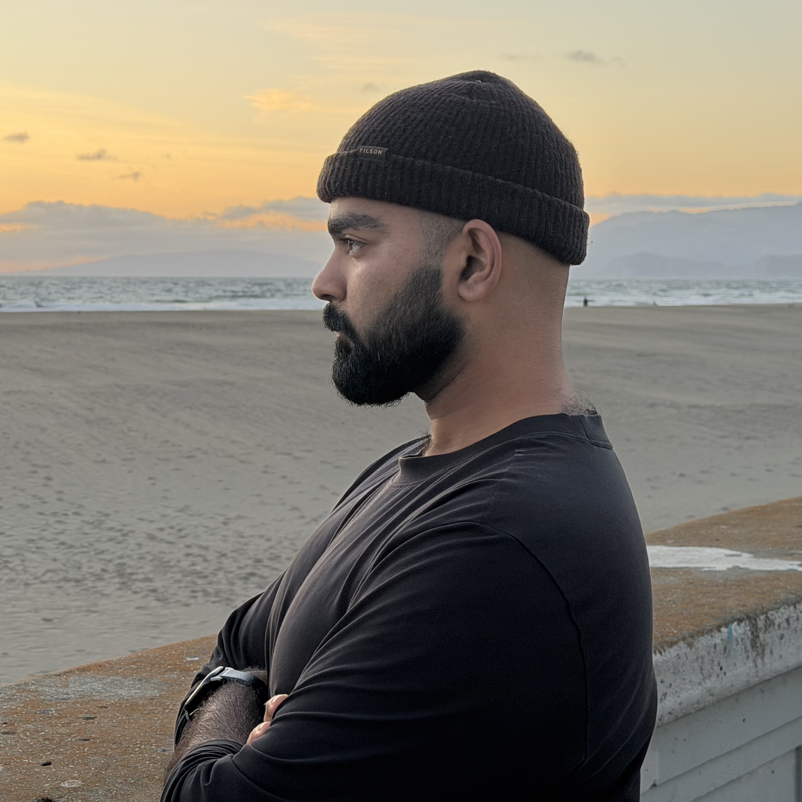

Now Showing
FW26 / Editorial / San Francisco
Frame 01 — 06
— Statement
01 / 08
ThreePinFork
San Francisco-based editorial and portrait practice. Sharp, character-driven work across fashion, dance, and model books.
Recent Work →
Editorial
Published-style work + commissions for brands, artists, and creative teams.
View Series
Portraits
Commissioned sessions for individuals, performers, families, and creatives.
View Series
Model Books
Digitals, editorial tests, beauty, apparel, and agency-ready portfolio sets.
View Books
Movement
Dance and performance studies built around line, timing, and character.
View Series
Engagements
Intimate portraits for couples with a relaxed, editorial point of view.
View Series
About
Who I am, how I work, and where to reach me for a sitting.
Read MoreContact + About
Every portrait begins with a conversation; let’s talk.